1996
Chasey Boy Part Deux: Enter The Mullet
I AM MAKING PROGRESS!!!! GO CHEF GO GO GO!!!! I am now on my FOURTH page! Woo!!!! I literally have SOOO MUCH STUFF (pictures!) to go through as I write these pages though, that it can feel overwhelming at times! Not only that, I also have A TON of VIDEOS I am working on for CFI that I need to FINISH so that I can start working on all of my OTHER VIDEO IDEAS for CHASEFLOYDINC! Part of me really does feel overwhelmed by all of it, but I CANNOT give up! I WILL NOT give up! I CAN DO THIS! GO GO GO CHEF GO!!!!

I do miss the days of my youth though when I hadn't a care or worry in the world! 1996 was the HALCYON of this, as can be seen by the fact that I had let my hair grow wild AND by the fact that I was literally making frequent trips to the COOLEST place that ever was; DISCOVERY ZONE!!!!


I turned three years old in 1996, which meant that by this time I had begun forming A LOT of memories due to the fact that I was LEARNING, EXPERIENCING, and DOING a whole bunch of new and awesome things INDOORS (DZ! Playing that EPIC fishing game we had!) and OUTDOORS (Bounce Houses! Looking at REAL life FISH...and DOGS!)! I also remember all of the EVEN MORE EPIC kids shows (many of which from FOX KIDS, the MOST EPIC TV CHANNEL OF ALL TIME!) that had been released, such as BEETLEBORGS, which I would think about while looking at the toys listed in this EPIC SEARS CATALOG my mom kept in her (you guessed it!) AWESOME 1996 Teal Chevy Blazer (which was so EPIC that it even had a BUGSHIELD...!)! that she traded in her small red car (I think it was a Ford!) to fit our growing family inside of!
 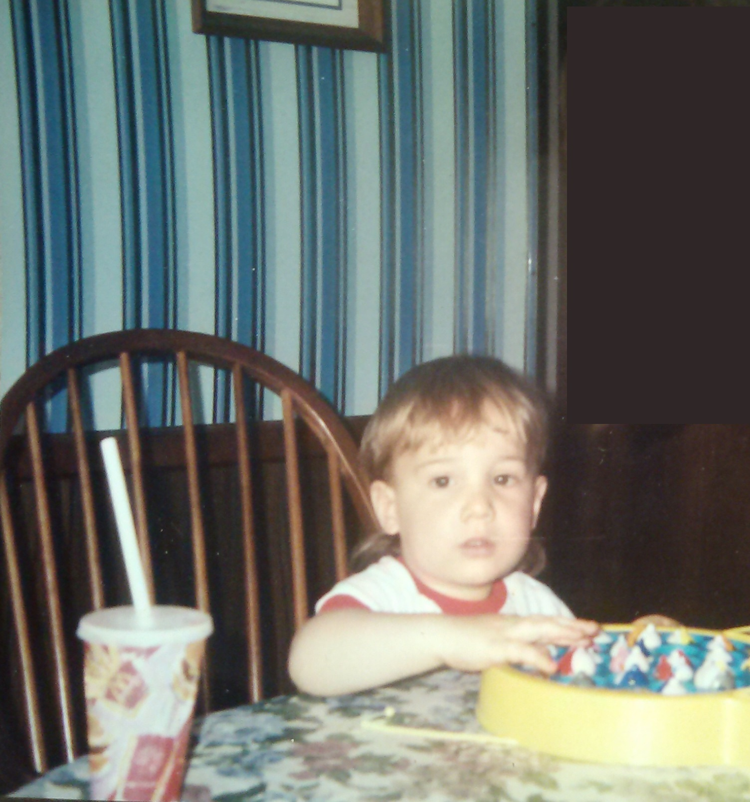
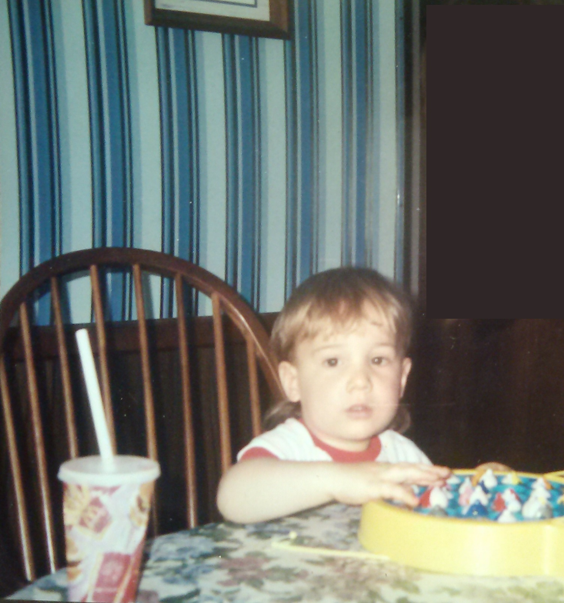
!")

!") 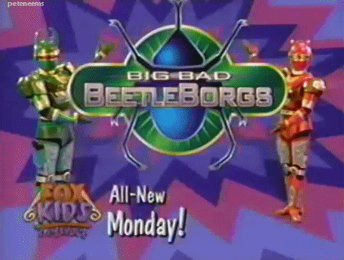
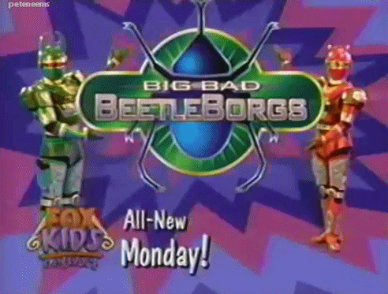


 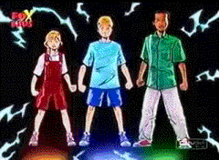
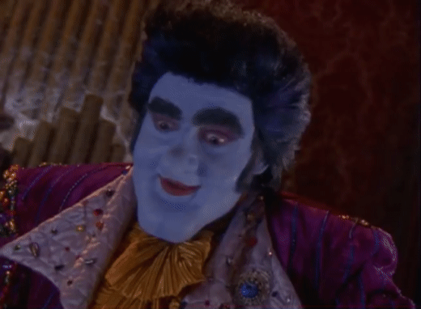
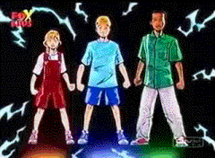
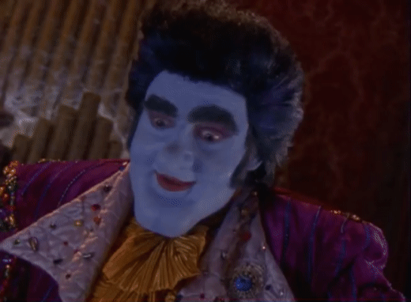

 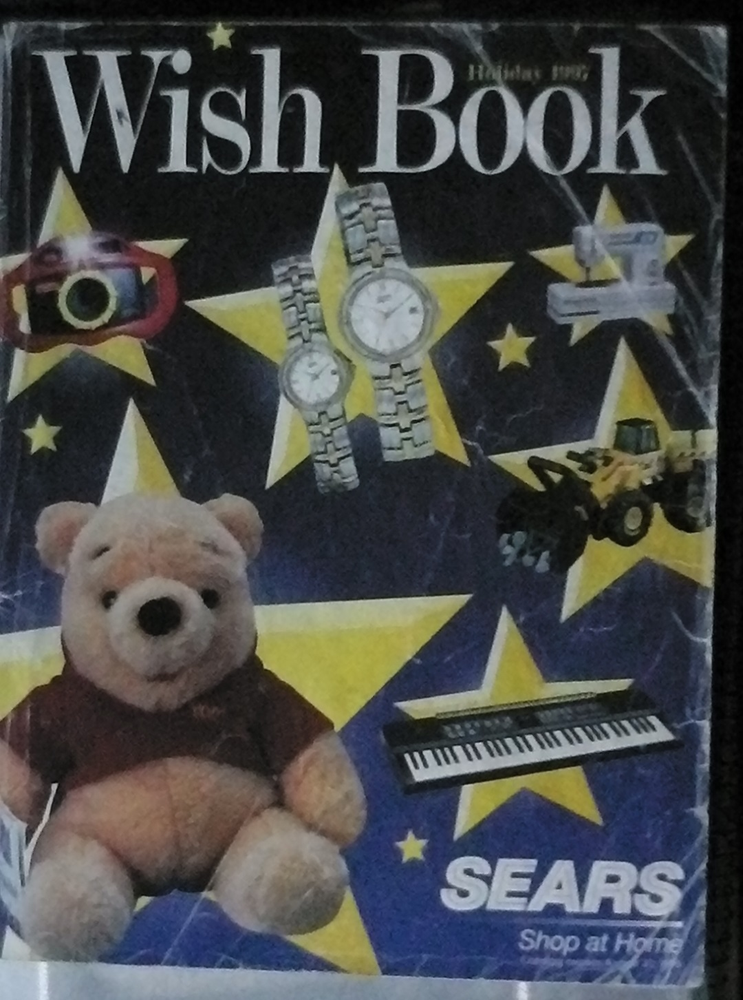
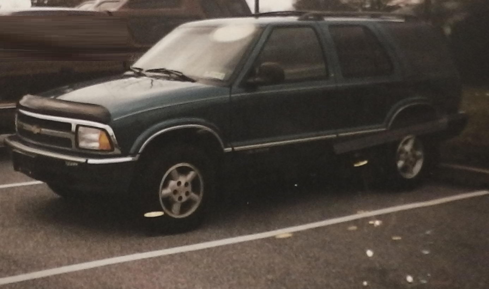
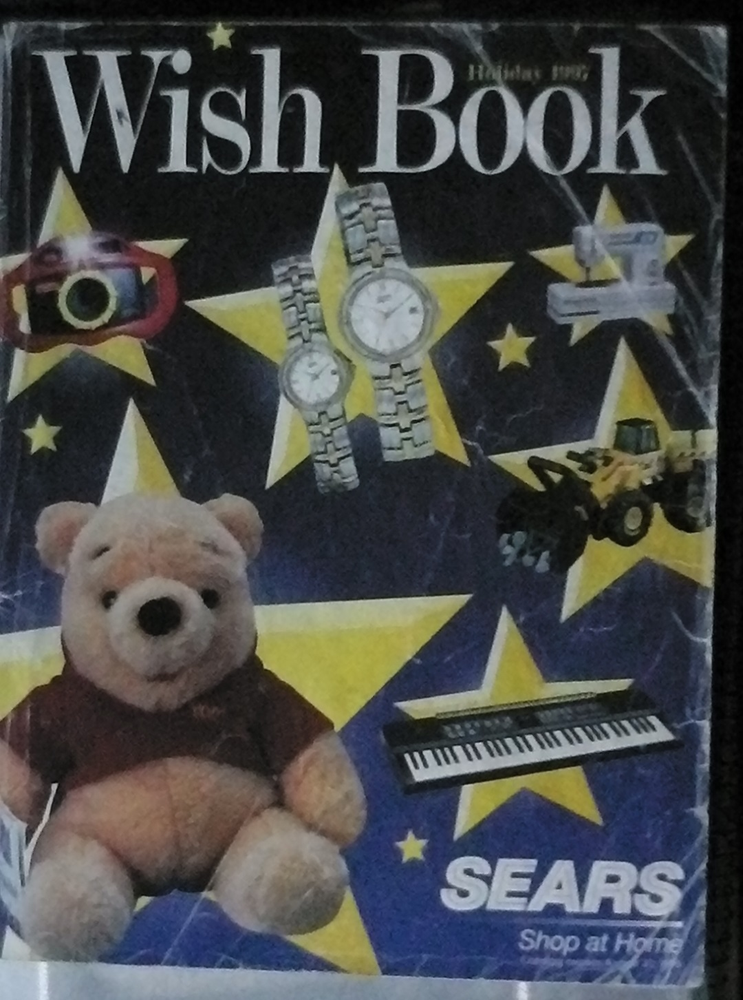
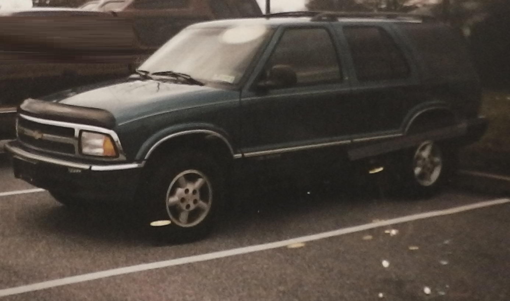